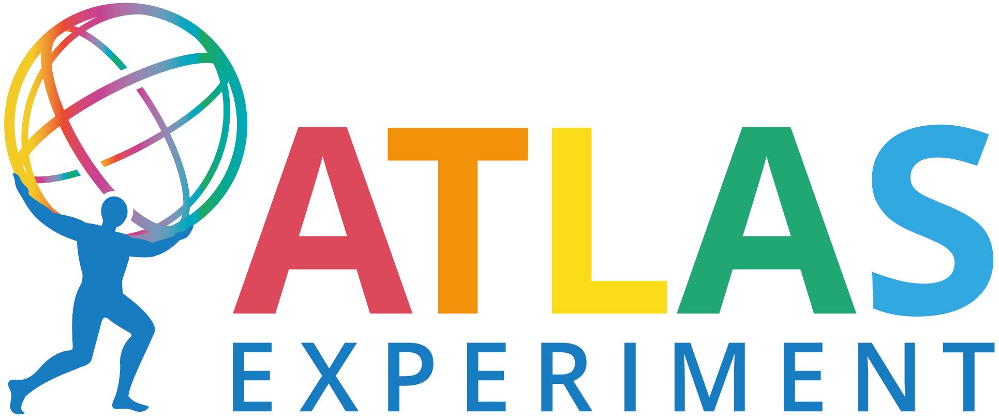

Community
ATLAS
The ATLAS Experiment is one of the four major experiments at the Large Hadron Collider (LHC). Approaching one Exabyte of data on disk and tape in 2024, ATLAS has always been one of the largest scientific data producers in the world. A well-integrated, resilient, and efficient data management solution is crucial to overall experiment performance and ATLAS was in need of a better solution by the end of LHC Run-1 in 2012. Thus ATLAS invested heavily in the design and development of a new system called Rucio to ensure scalability for future LHC upgrades, allow expressive policies for our data flow needs, connect with our distributed computing infrastructure, automate operational tasks as much as possible, integrate new technologies from the storage and network areas, and combine all this within a modular and extensible architecture. When Rucio was first put in production in 2014, the improvements it brought into ATLAS data management were substantial and also attracted a lot of interest by the wider science community. By now, Rucio manages all ATLAS data, including centrally produced and user-generated, totalling over a billion files distributed across 120+ scientific data centers. Rucio orchestrates daily transfers of tens of Petabytes, ensures optimal usage of our network infrastructure, takes care of seamless integration between scientific storage, supercomputers, and commercial clouds, as well as provides various interfaces to make the daily life of scientists more comfortable. Rucio has also matured into an open-source community project, and we are extremely happy about its continued success. The idea of a common data management system, in use by many communities with similar needs, is a guiding principle for us and we will continue to invest into our shared future.
CMS
 The CMS Collaboration brings together members of the particle physics community from across the globe in a quest to advance humanity’s knowledge of the very basic laws of our Universe. CMS has over 4000 particle physicists, engineers, computer scientists, technicians and students from around 240 institutes and universities from more than 50 countries.
The CMS Collaboration brings together members of the particle physics community from across the globe in a quest to advance humanity’s knowledge of the very basic laws of our Universe. CMS has over 4000 particle physicists, engineers, computer scientists, technicians and students from around 240 institutes and universities from more than 50 countries.
The collaboration operates and collects data from the Compact Muon Solenoid, one of two general-purpose particle detectors at CERN’s Large Hadron Collider. Data collected by CMS are distributed to CMS institutions in over forty countries for physics analysis.
In 2018, CMS embarked on a process to select a new data management solution. The previous solution was over a decade old, difficult to maintain, and would not easily adapt to the data rates and technologies used for data transfers in the HL-LHC era. As a result of this selection process, CMS decided to adopt Rucio which was, at the time, used by on major experiment and a couple of smaller experiments.
This choice has been a good one for CMS, allowing them to no longer operate a service at each of more than 50 data sites, to scale easily to new rates of data transfer, and to adopt new technologies for data transfer as needed. CMS aggregate data rates, managed by Rucio, regularly top 40 GB/s and have been proven to reach 100 GB/s.
ESCAPE
 ESCAPE (European Science Cluster of Astronomy & Particle physics ESFRI research infrastructures) brings together the astronomy, astroparticle and particle physics communities. Establishing a collaborative cluster of next generation ESFRI facilities to implement a functional link between the concerned ESFRIs and the European Open Science Cloud (EOSC).
ESCAPE (European Science Cluster of Astronomy & Particle physics ESFRI research infrastructures) brings together the astronomy, astroparticle and particle physics communities. Establishing a collaborative cluster of next generation ESFRI facilities to implement a functional link between the concerned ESFRIs and the European Open Science Cloud (EOSC).
ESCAPE aims to produce versatile solutions, with great potential for discovery, to support the implementation of EOSC thanks to open data management, cross-border and multi-disciplinary open environment, according to FAIR (Findable, Accessible, Interoperable and Reusable) principles. Key outputs of ESCAPE collaboration include Data Infrastructure for Open Science, Science Analysis Platform, Software Repositories, Citizen Science activities and training/education activities.
Since 2023 ESCAPE evolved to a long standing Collaboration Agreement to continue addressing the challenges shared by its partners and the relevant communities for the implementation of open-science practices and the management of FAIR digital research objects into the core operation of ESFRI projects, landmark projects and other relevant world class RIs. These challenges are technical, operational, sociological and scientific.
ESCAPE has chosen Rucio as its data management solution. This move signifies a significant step towards enhancing and streamlining the data distribution, management, and analysis processes within the scientific community. Since then CTAO, SKA and the Vera C. Rubin Observatory have officially selected Rucio as their data management solution.
Belle II
 The Belle II experiment is a particle physics experiment located at High Energy Accelerator Research Organization (KEK) in Tsukuba, Japan. It is the successor to the Belle experiment operated from 1999 to 2010 and expected to collect around 50 times more data. In order to be able to manage this huge volume of data, Belle II decided to move to Rucio that has demonstrated its capabilities at scales much higher than the current volume managed by Belle II (over hundred million files, more than 25 Petabytes) and that will be able to cope with the volume expected in the future.
The Belle II experiment is a particle physics experiment located at High Energy Accelerator Research Organization (KEK) in Tsukuba, Japan. It is the successor to the Belle experiment operated from 1999 to 2010 and expected to collect around 50 times more data. In order to be able to manage this huge volume of data, Belle II decided to move to Rucio that has demonstrated its capabilities at scales much higher than the current volume managed by Belle II (over hundred million files, more than 25 Petabytes) and that will be able to cope with the volume expected in the future.
Since January 2021, Rucio is responsible for managing all the data produced across the data centers used by Belle II over their full lifecycle. In particular it ensures the proper replication of all the data according to the replication policies of Belle II. Rucio fits very well to Belle II needs and it allowed to simplify and automate many tasks.
At the beginning of 2024, Rucio was also chosen to become the official metadata service of Belle II in the near future after a careful evaluation. We expect to gain immediate benefits from it when this functionality is enabled in production.
DUNE
 The Deep Underground Neutrino Experiment (DUNE) is an international experiment exploring the origins of matter, the ordering of neutrino masses, and potentially the formation of black holes through the observation of neutrinos from supernova core collapse. DUNE consists of two neutrino detectors situated underground with roughly 1300 km between the near and far detectors. The near detector will be located on site at Fermi National Accelerator Laboratory with the far detector located 4850 ft underground at Sanford Underground Research Facility in Lead, SD. These detectors will be exposed to the neutrinos created by the Long Baseline Neutrino Facility at Fermilab.
The Deep Underground Neutrino Experiment (DUNE) is an international experiment exploring the origins of matter, the ordering of neutrino masses, and potentially the formation of black holes through the observation of neutrinos from supernova core collapse. DUNE consists of two neutrino detectors situated underground with roughly 1300 km between the near and far detectors. The near detector will be located on site at Fermi National Accelerator Laboratory with the far detector located 4850 ft underground at Sanford Underground Research Facility in Lead, SD. These detectors will be exposed to the neutrinos created by the Long Baseline Neutrino Facility at Fermilab.
The raw data produced from the DUNE detectors are unique compared with other HEP experiments for both readout of neutrino interactions and observation of astrophysical events. The DUNE far detectors will consist of several large Liquid Argon Time Projection Chambers filled with approximately 17 kilotons of liquid argon. The far detector data produced from a single trigger of DAQ can vary in size from 100 MB for neutrino interaction candidates to larger than 100 TB for supernova burst candidates. The cataloging and replication of the large data volumes poses an interesting challenge for DUNE when trying to optimize workflows with large I/O requirements based upon these large volume trigger records. From the beginning, DUNE chose Rucio to manage data distribution, replication, and removal. As well, DUNE has become an active part of the Rucio development community as the experiment brings unique needs to data management.
Get in touch
We are always happy to chat. You can drop us a mail and we will reply as quickly as possible.